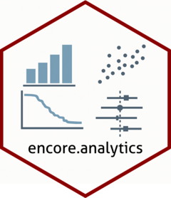

Package index
-
cox_pooling() - Manually fit and pool Cox proportional hazards model results from multiple imputed datasets
-
create_table1() - Wrapper around
gtsummary::tbl_summary()to create a beautiful Table 1 quickly
-
install_on_demand() - Install package on demand
-
km_pooling() - Pooled Kaplan-Meier estimate and survival curve
-
raking_weights() - Estimate raking weights for a mimids or wimids object
-
simulate_data() - Simulates an artifical EHR-derived analysis-ready oncology dataset